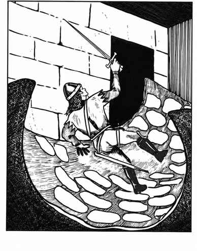

诱捕者 · Trapper
 |
|
诱捕者是只在洞穴、地窟和其他黑暗处出现的狡猾怪物，偏好地下居所。它们把扁平身体塑形成地面的样子，质地几乎和石头一样坚硬，普通方式有 95% 概率无法发现。诱捕者通常等猎物走到身体中央（常制造出像箱子或宝箱的隆起）后，突然闭合身体，将毫无防备的受害者压住。
每轮挤压造成的基础伤害为 4 加上受害者的护甲等级。被困者无法使用武器，因为诱捕者强大的肌肉会阻止动作；无论承受多少伤害，猎物都会在 6 个战斗轮内窒息。只有杀死诱捕者，或令其确信自己必死，才会使它释放猎物。财宝保存在身体下方。诱捕者抗火抗寒，相关伤害至多减半，甚至可能完全无效。
诱捕者没有固定形状，能将身体改变为所选地面的形状；普通诱捕者可覆盖最多 400 平方尺，巨型个体可达 600 平方尺，还能改变颜色与地面或地板融为一体。